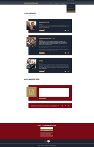
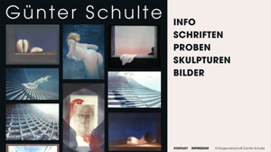
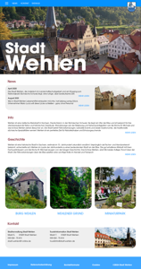
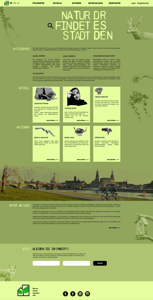
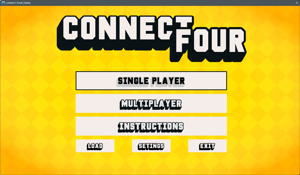
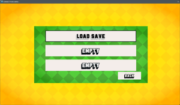
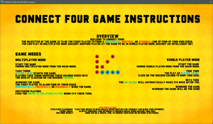
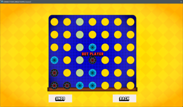
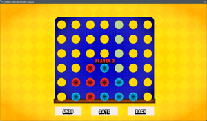

Second Semester - Gallery
Modul: Design of interactive interfaces




In this module, we had the task of adding a forum to the website of Jonas Kaufman, redesigning the website of Günter Schlute, as well as redesigning the website of the city of Wehlen. At the end, we were tasked with creating a website design for the project Nature Meets City.
Modul: Programming II






In this module, we were tasked with programming Connect Four in C++,
which we had previously programmed in C.
Find the game here!